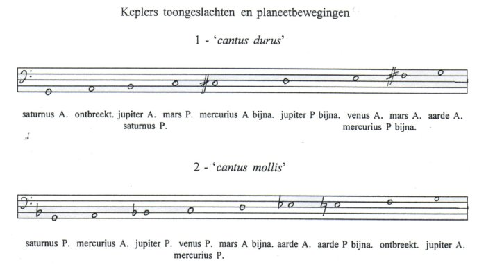

Inhoudsopgave
Harmonices mundi liber Quinque Inhoudsopgave
Harmonices mundi liber Quinque  De
modi De
modi
De toongeslachten
In hoofdstuk vijf van boek V brengt Kepler in een aantal
stappen het verband aan tussen de planeetbewegingen en twee toongeslachten,
toongeslachten die overigens uit Keplers eigen muziektheorie stammen. Deze
toongeslachten lijken op de moderne majeur- en mineurtoonladder, Kepler
gebruikt namelijk het zogenaamde cantus durus (toonvolgorde
G-A-B-c-d-e-fis-g) en het cantus mollis (G-A-Bes-c-d-es-f-g).
Het eerste toongeslacht (cantus durus) wordt gekenmerkt door de
aanwezigheid van grote terts (B), grote sext (e) en de leidtoon (fis), het
tweede toongeslacht (cantus mollis) door kleine terts (Bes) en kleine
sext (es). Deze zelfde intervalparen (grote/kleine) terts en sext beheersen ook
de akkoorden die Kepler op basis van tabel 1 opstelt.(1)
Allereerst reduceert Kepler de snelheden van de planeten om ze binnen het
octaaf te kunnen plaatsen. De reden hiervoor is dat tussen twee consonante
intervallen toch dissonanten kunnen ontstaan, wanneer zij niet in een octaaf
geplaatst zijn. Kepler geeft het voorbeeld van een grote terts geplaatst op een
grote sext, dat een dissonant interval 12:25 zou opleveren.(2) De tabel waarin deze reducties worden
weergegeven ziet er als volgt uit (zie ook afbeelding 25, het origineel uit
HM.):
| Tabel 2 Reductie extreme
hoeksnelheden door machten van 2
| 1
extreme hoeksnelheid |
2 planeet |
3 reductie factor |
4 resultaat |
| 384’0’’ |
mercurius P |
27 (128) |
3’0’’ |
| 164’0’’ |
A |
26 (64) |
2’34’’ |
| 97’37’’ |
venus P |
25 (32) |
3’3’’+ |
| 95’50’’ |
A |
25 (32) |
2’58’’ |
| 61’18’’ |
aarde P |
25 (32) |
1’55’’- |
| 57’3’’ |
A |
25 (32) |
1’47’’ |
| 38’1’’ |
mars P |
24 (16) |
2’23’’- |
| 26’14’’ |
A |
23 (8) |
3’17’’ |
| 5’30’’ |
jupiter P |
22 (4) |
2’45’’ |
| 4’30’’ |
A |
22 (4) |
2’15’’ |
| 2’15’’ |
saturnus P |
- |
2’15’’ |
| 1’46’’ |
A |
- |
1’46’’ |
| | Kepler deelt de extreme hoeksnelheden door machten van twee,
een voorbeeld uit tabel 2: mercurius P 384’0’’ x 60 sec. =
23040’’ : 128 = 180’’ = 3’. N.B. De + of - in de
tabel betekent naar boven of beneden afgerond, een voorbeeld: mars A
26’14’’ = 1574’’ : 8 = 196,75’’ =
3’16,75’’ = 3’17’’-. Muzikaal gezien
betekent dit dat hij de ‘tonen’ (de extreme hoeksnelheden) naar
beneden octaveert.
De langzaamste planeet (saturnus in aphelium) kent hij de
laagste toon toe: de G (Gamma ut). De aarde in aphelium komt daarmee
overeen: de snelheid van saturnus is 1’46’’, die van de aarde
is 1’47’’ (57’3’’ gedeeld door de vijfde
macht van 2 : 57’3’’ = 3423’’ : 32 =
106,97’’ = 1’47’’-).
Het verschil van een seconde, zo merkt Kepler op, is
muzikaal gezien de verhouding 106:107, hetgeen kleiner is dan een komma.(4) Kepler is nogal laconiek over dit
verschil: ‘... wie’, zo zegt hij, ‘waagt het met de beweging
van saturnus in aphelium om een seconde strijden?’ (... quis ausit in
Saturni aphelio motu de uno Secundo contendere?(5)).
Het octaaf G-g nu, wordt gevormd door saturnus in aphelium
(1’46’’) en de aarde in aphelium (2 maal
1’47’’ = 3’34’’), waarbij echter goed
bedacht moet worden dat de aarde in feite vijf octaven hoger ligt. Dit geldt
voor alle ‘noten’ (extreme snelheden) die Kepler binnen een octaaf
plaatst: in werkelijkheid ‘klinken’ zij zoveel octaven hoger als
machten van twee waarmee zij gereduceerd zijn. |
Nadat Kepler het octaaf heeft vastgesteld, gaat hij uit van
de snelheid van aarde in aphelium (1’47’’) om de overige
intervallen te verkrijgen. Hij doet dit door 1’47’’ te
vermenigvuldigen met de harmonische delingen(6), de aldus verkregen getallen vergelijkt Kepler vervolgens
met de quotiënten van de delingen uit tabel 2.
De producten komen niet exact, maar slechts ongeveer met de
quotiënten uit de tabel (echter wel binnen Keplers marge); alleen voor de
beweging van venus P en aarde P kan Kepler geen waarde vinden.(7) Een voorbeeld:
1’47’’ x 5:4 (grote terts) = 2’14’’,
hetgeen vrijwel overeenkomt met saturnus in aphelium en jupiter in aphelium
(2’15’’). Op deze wijze berekent Kepler alle intervallen.(8)
De verhouding mars A:P als kwint uit tabel 1 kent Kepler in
tabel 3 enkel schijnbaar een overmatige kwart toe (c-fis, zie tabel 3), bedacht
moet worden dat mars P in werkelijkheid een octaaf boven mars A ligt en dat
Kepler allereerst voor mars A een f berekent: mars A f3 en marsP c4 verhouden
zich zo als een kwint. Keplers reden om een fis te noteren is is dat de fis
dichter bij 3’17’’ ligt, en dat, volgens Kepler, de fis
steeds vaker in de muziek gebruikt wordt.(9)
Uitwerking: 2 x 1’47’’ =
3’34’’ (het octaaf van g van G); 3’34’’ x
8:9 = 3’10’’+ voor f3, terwijl 3’34’’ x
15:16 = 3’20’’ voor fis3 iets dichter bij mars A
3’17’’ ligt. In werkelijkheid ligt mars A
(3’17’’) dus tussen f3 (3’10’’) en fis 3
(3’20’’).
Om het tweede toongeslacht (cantus mollis) te
verkrijgen herhaalt Kepler het procédé maar ditmaal neemt hij
saturnus in perihelium (2’15’’) als laagste toon G(10) (in feite transponeert Kepler zijn
eerste toonladder een grote terts omhoog). De intervallen worden op dezelfde
wijze als de eerste maal afgeleid, maar nu door 2’15’’ met de
harmonische delingen te vermenigvuldigen.
Bijvoorbeeld:
2’15’’ x 8:9 = 2’32’’, hetgeen vrijwel
overeenkomt met mercurius in aphelium. De overige intervallen in het tweede
toongeslacht worden evenzo afgeleid, ditmaal kan Kepler voor venus A en mars P
geen waarden afleiden (daarnaast ontbreekt saturnus in aphelium).(11) Tabel 3(12) toont een overzicht van de resultaten van deze
berekeningen:
Tabel 3
Planeetbewegingen in twee toongeslachten
1
extreme
hoeksnelheid |
2
saturnus A = G |
3
saturnus P = G |
| 4’30’’ jupiter
A |
(B octaaf lager) |
g
4’30’’ |
| 3’39’’- aarde
P |
- |
bijna e
3’45’’ |
| 3’34’’ aarde
A |
g
3’34’’ |
dis
3’36’’ |
| 3’17’’ mars
A |
fis
3’21’’ |
bijna d
3’23’’ |
| 3’3’’+ venus
P |
- |
c 3’0’’ |
| 3’0’’ mercurius
P |
bijna e
2’58’’ |
c 3’0’’ |
| 2’58’’ venus
A |
e 2’58’’ |
- |
| 2’45’’ jupiter
P |
bijna d
2’41’’ |
Bes
2’42’’ |
| 2’34’’
mercurius A |
bijna cis
2’30’’ |
A 2’32’’ |
| 2’23’’ mars
P |
c 2’23’’ |
- |
| 2’15’’ jupiter
A |
B 2’14’’ |
(g octaaf hoger) |
| 2’15’’ saturnus
P |
B 2’14’’ |
G
2’15’’ |
| 1’46’’ saturnus
A |
G
1’46’’ |
- |
Het is volgens Kepler duidelijk dat in de hemel de noten van
twee toongeslachten (durus en mollis) voorkomen, de noten waarvan
het natuurlijke gezang zich in de muziek bedient (Est igitur in coelo
duplici via, et in duobus quasi generibus cantus, expressa scala Musica, seu
systema unius Octavae, cum locis omnibus, per quae in Musica traducitur cantus
naturalis.(13)).
Deze ‘scala Musica’ zien er als volgt uit (zie ook
afbeelding 33, de originelen uit HM.):

Op deze wijze brengt Kepler tussen de twee toongeslachten en
de planeetbewegingen verband aan: de extreme hoeksnelheid correspondeert met
een toon uit een toonladder.
Afbeeldingen
afb. 25
‘Tabel 2' HM V, p. 203

afb. 26
‘Planeet-toongeslacht' HM V, p. 204
1. Voor een verhandeling
over de onstaanswijze van deze twee toongeslachten en hun verhouding met de
opkomst van de majeur/mineur tonaliteit in de 17de eeuw, zie Michael
Dickreiter, Musiktheoretiker. pp. 160-170 (terug naar
tekst)
2. HM. V, p. 202 (305) (terug
naar tekst)
3. Naar: HM. V, p. 203 (306) (terug naar tekst)
4. De zogenaamde `didymische’ komma (ook
`syntonische’ geheten), 81:80. Een verschijnsel dat ontstaat uit het
gegeven dat zuivere octaven, kwinten en tertsen onverenigbaar zijn: het
interval van vier op elkaar gestapelde kwinten
(c-g-d’-a’-e’’) is iets groter (een didymische komma,
81:80) dan het zelfde interval gemaakt door twee octaven plus een terts
(c-c’-c’’-e’’) op elkaar te stapelen.
Bijvoorbeeld: (4 kwinten) - (2 octaven + grote terts) = (3:2 + 3:2 + 3:2 + 3:2
= 81:16) - (2:1 + 2:1 + 5:4 = 20:4). Tweede stap, (81:16) - (20:4) = 4 x 81 :
16 x 20 = 324:320 = (4x) 81:80, de didymische komma te groot dus (anders
berekend: 81/16 = 5,0625. 20/4 = 5. 5,0625:5 = 1,0125 = 81/80). Kepler
hanteert, gezien zijn voorkeur voor polyfonie, de middentoonstemming waarin de
didymische komma voorkomt. Zie over stemmingsproblemen verder L.P. Grijp en P.
Scheepers, Van Aristoxenos tot Stockhausen. I, pp. 443-451; over Kepler,
polyfonie en middentoonstemming, zie ook Michael Dickreiter,
Musiktheoretiker. p. 148 e.v., of Daniel P. Walker, `Kepler’s
Celestial Music’ loc. cit. p. 229 e.v. (terug
naar tekst)
5. HM. V, p. 203 (306). Overigens, Kepler heeft een
pagina eerder (HM. V, p. 202/305) opgemerkt dat verschillen die kleiner
zijn dan een halve toon verwaarloosd mogen worden. Hoofdstuk negen (het langste
- maar ook meest complexe, - 30 van de 72 folio vellen waaruit boek V bestaat)
is geheel gewijd aan de verklaring van die verschillen (en het wiskundig bewijs
daarvoor). Aangezien deze scriptie niet alleen aan Kepler is gewijd, zou het te
ver voeren om in detail dit negende hoofdstuk te behandelen; hierom sluit ik
mij dan ook aan bij hetgeen Kepler aan het einde van hoofdstuk vijf opmerkt:
`het is voorlopig voldoende om hetgeen dat onderzocht moet worden onder ogen
gehad te hebben (HM. V, p. 206/309). Voor een volledige behandeling van
het negende hoofdstuk, zie Bruce Stephenson, Heavens. pp. 185-236. (terug naar tekst)
6. Deze delingen werden door Kepler reeds besproken, zie
HM. III, p. 22/107 e.v. (hoofdstuk 3). Het zijn uit hoofdstuk 3: 4:5
(grote terts), 3:4 (kwart), 2:3 (kwint) en 3:5 (grote sext); uit hoofdstuk 4:
8:9 (grote secunde) en 15:16 (kleine secunde). (terug naar
tekst)
7. HM. V, p. 204 (306) (terug
naar tekst)
8. Ibid. pp. 203-204 (306-307) (terug naar tekst)
9. Ibid., p. 204 (306) (terug
naar tekst)
10. Volgens Michael Dickreiter (Musiktheoretiker.
p. 105) begint Kepler met saturnus op Bes en transponeert hij vervolgens de
toonladder een kleine terts omlaag, dit lijkt mij onjuist: Kepler begint op G
en rekent daarna `omhoog’. Zie HM. V, p. 204 (306) (terug naar tekst)
11. HM. V, p. 204 (307). Bruce Stephenson
(Heavens. p. 159) merkt op dat Kepler wel waarden had kunnen noteren,
maar dit om een of andere reden niet heeft gedaan (Stephenson geeft dan ook een
aantal voorbeelden van de mogelijkheden die Kepler nog openstonden). (terug naar tekst)
12. Naar: HM. V, pp. 202-205 (306-307); en Bruce
Stephenson, Heavens. p. 158 (terug naar
tekst)
13. HM. V, p. 205 (307) (terug
naar tekst)
14. Naar: HM. V, p. 204 (306)
|